Housing in Boston has targeted mostly high-income buyers in the past few years. Most of these high-end properties are used as investment vehicles. This exploratory data analysis looks at the properties in high price end of the market to understand the attributes and patterns of the housings built for the rich.
Dataset
Residential sales dataset contains data on 49301 properties of Boston. It includes information on various attributes of sellers, buyers, and properties. For the purpose of this data analysis, we have focused mostly on: price, ownership, and selling/buying trends.
The analysis is grounded on insights from the two readings "Reckoning with Boston’s Towers of Wealth ", and "Homes for Profit: An Analysis of Investor Activity in the Greater Boston Residential Real Estate Market, 2000 - 2022".
We will be referencing these readings as we analyze the dataset. The initial questions are only starting points for exploration
as the analysis has lots of follow-up questions.
Initial Overall Analysis Questions
How is the housing market distributed based on price?
How are the upper range residential housings distributed based on ownership? i.e. investors vs. non-investors, LLCs?
What is the overall selling/buying trend for the luxury houses (flip, cash trend) in the case of investors?
Discoveries & Insights
To assess the data quality, we have conducted some univariate and bivariate analyses in the beginning. First, let us look at the overall price distribution over the years.
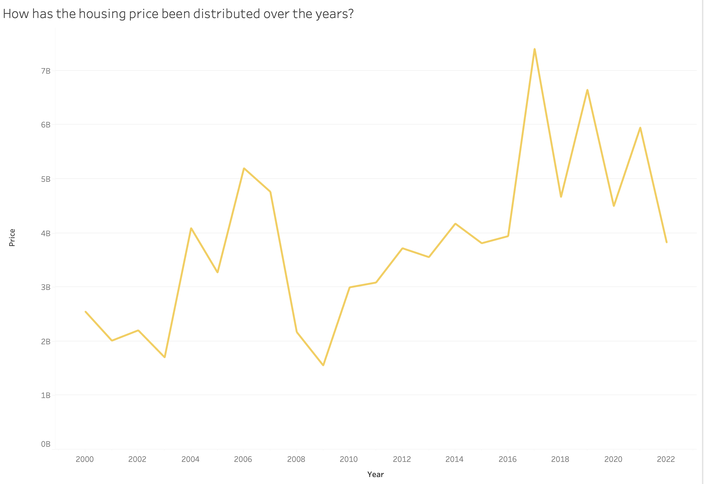
Trend of total transaction price change of the housing properties over the past years.
The data contains information from 2000-2022.
We notice sharp fulctuations between 2018-2022 perhaps because of the pandemic. Since we do not notice much abnormalities, we will perhaps focus our analysis on the given range of years when needed.
Since the readings discuss heavily on price differences across different styles of houses, let us dig into that.
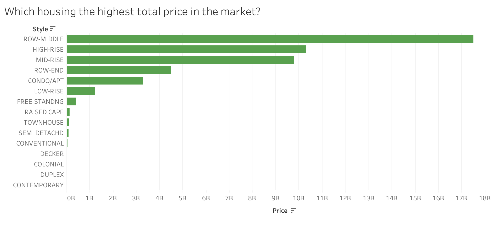
total price in descending order for each style of housing
Based on the above figure, Row-middle style housing has the maximum price among all styles of houses. However, we can see that this is largely because Row-middle has the max number of houses (see below).
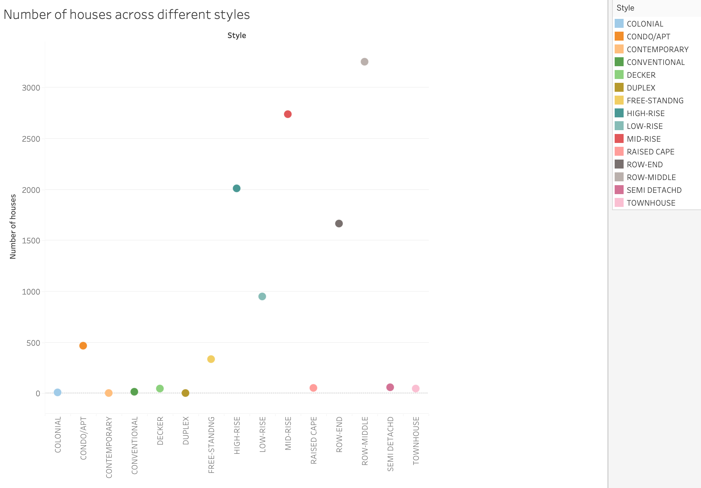
No. of houses across different styles
Considering the lower number of certain luxury houses like condominiums compared to other housing styles, using the average of the total price can help provide a more balanced comparison across different styles. It gives more weight to each individual property's price, rather than being heavily influenced by the number of properties in each style. Since the intention with the analysis is to see how the trends on housing on the higher end of price, considering the average price seems appropriate.
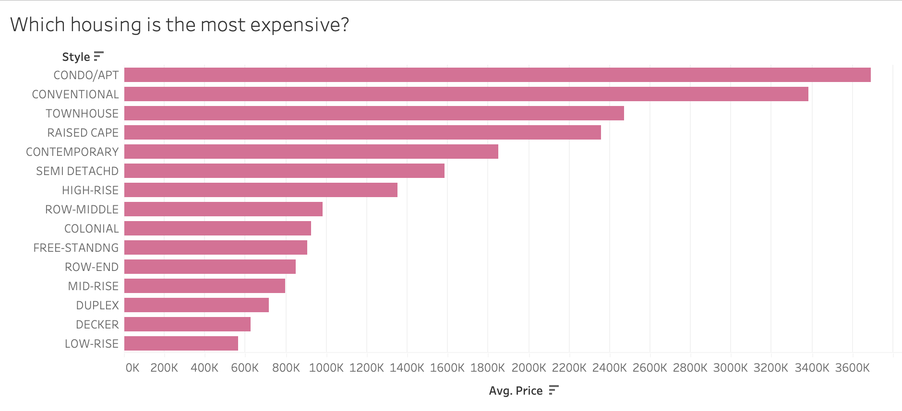
average price in descending order for each style of housing
Now we can see that the condominium style houses are on the highest price range among all the styles. Let us see some more distribution of prices across styles, property types, and usage.
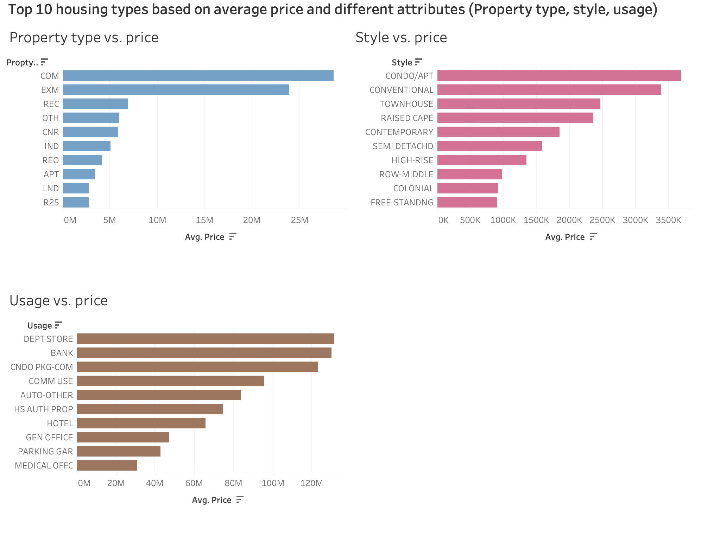
The 10 most expensive types of housing based on average price across various attributes.
Looking at the most expensive housing types based on property and usage, we see that they include mostly non-residential housings like commercial buildings and department stores. Since we are only focusing on residential houses for this analysis, we decide to not consider non-residential properties even if they are in the high price range.
The next question that arises now is: What are different styles of housing being used for?
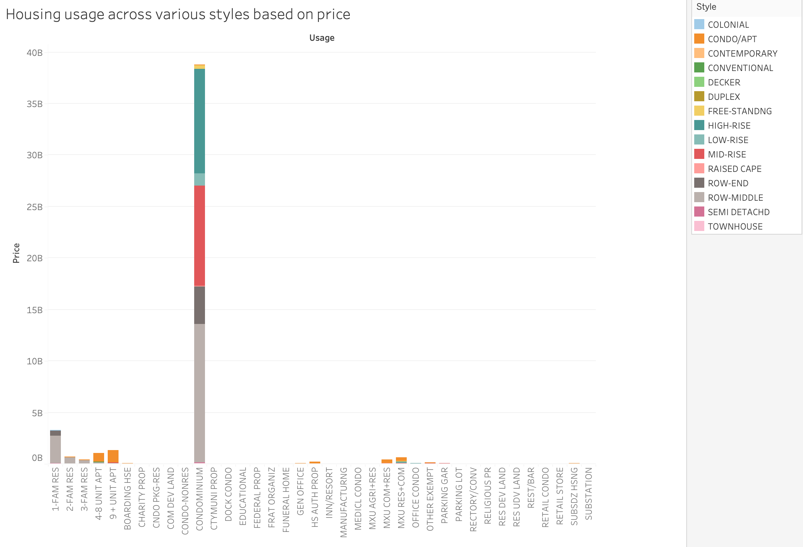
price of housing distribution based on usage and styles
When we look at the usage of each style and the price, we see that the highest price range is for the use in condominiums.
Now let us just zoom in on condominium usage for a moment. Let’s see the price distribution across different styles that are used as condo:
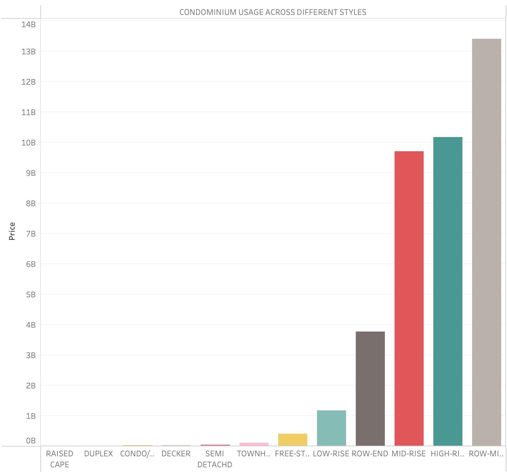
Price distribution of houses used for condominium across different styles.
We can see that Row-middle styles houses are being used for condo the most followed by high-rise and mid-rise. Since the "Towers of the Wealth" reading focuses on high-rises, let’s see what else are the high-rises are being used for.
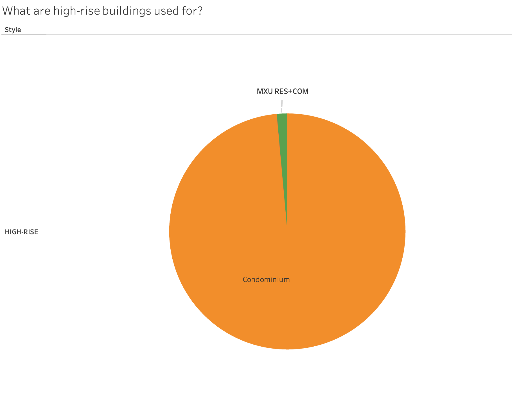
Distribution of high-rise properties usage.
We can see in the above pie-chart, majority of the high-rises are being used for condominium. The "Towers of Wealth" reading also discusses mainly on condominiums. Thus, based on our earlier analysis and readings, let’s focus on residences that are on high rises and are used for condominiums.
Now, we will explore the selling/buying trends of the housing. Let’s look at what portion of the properties used for condo were sold on cash vs. mortgage:
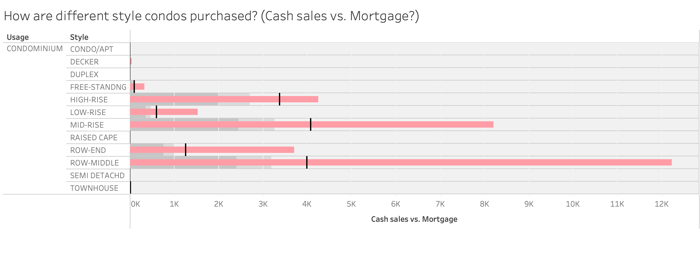
Cash sales vs. Mortgage distribution of condominiums.
We can see that among all styles of apartments, high rise has the highest cash sales: mortgage ratio. This could indicate that high rise condominiums are most likely to be sold cash only than other style buildings. This was also mentioned in the "Homes for Profit: Speculation and Investment in Greater Boston"
reading where they discussed the cash sales in condominiums contributing towards speculative investment.
Following analyses are for only high-rise Condominiums:
Who are the buyers/sellers of these properties?
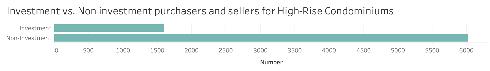
Distribution of Investor vs. non-investor buyers and sellers of high-rise condos.
The given analysis shows that most of these properties are bought/sold by non-investors. However, since one of the readings
suggested that investors are mostly contributing towards manipulating the housing prices, we will focus on the investors.
Another important insight from the reading was that LLC investors are also involved in the speculation.
How are the LLC based investment companies distributed?
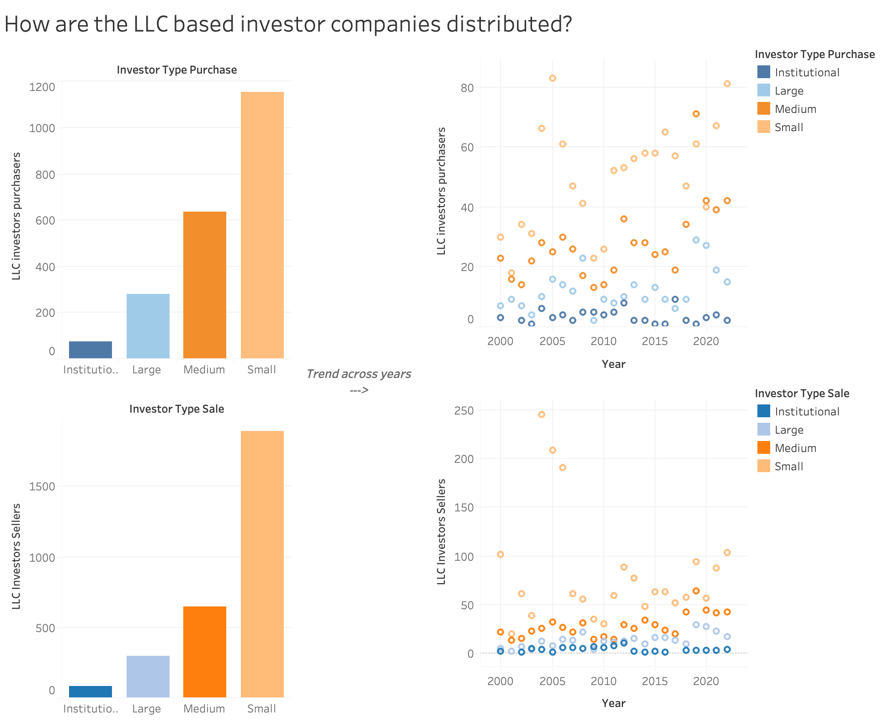
Distribution of LLC investor type purchase and sales and trends over 2000-2020
The given dashboard shows that there is a similar trend for investor purchase and sale where most LLC investors have been small type investors for years.
The charts on the right also suggest that LLC based purchases and sales have been increasing in the past few years.
One key attribute of speculative residential real estate investment based on the reading was flipping. "Flipping" refers to the practice of purchasing a property with the intention of selling it quickly for a profit.
The difference in price in between flips is the major contributor to property price surge. Since we are focusing on investors,
let's look at how the flip period (short-term, long-term, mid-term) affects the price difference across investor based properties. We filtered out non-term flip that was in the dataset.
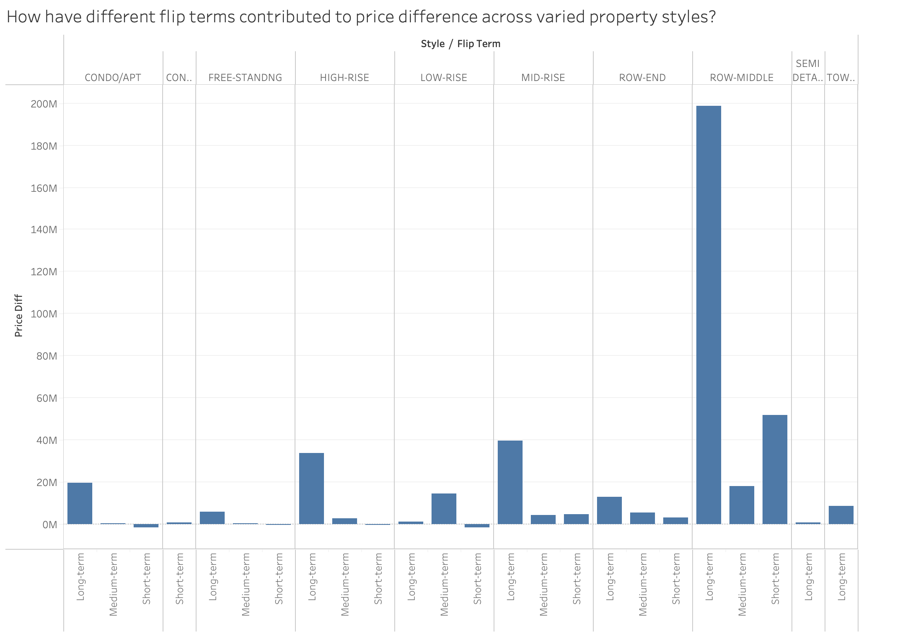
distribution of investor properties across various styles based on flip-terms and price differences
This visualization shows expected results with properties with long-term flip periods having more price difference as in the case of Row-middle. Based on the reading, short-term flips are the most concerning, so let’s look if we can find anything interesting with short term flipping.
In the figure below, we took into account either buying or selling flip.
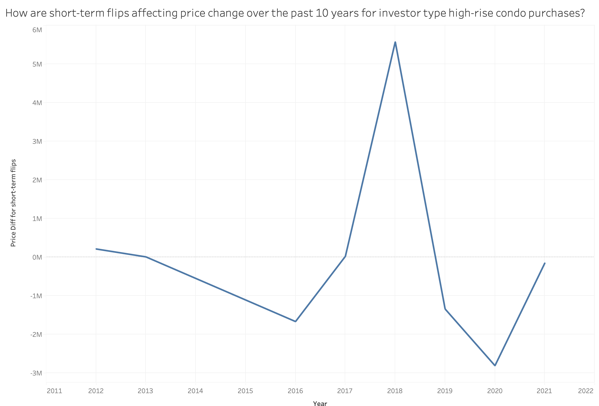
Price difference for short term flips for high-rise condominiums from 2012-2022.
We observe sharp price changes across years with peak rise and falls during 2018-2021 which could be because of the pandemic.
This could also indicate that the trend of short term flipping affecting the price has changed dramatically since the pandemic.
Finally, let's look at number of flips across different usages of properties purchased by investors.
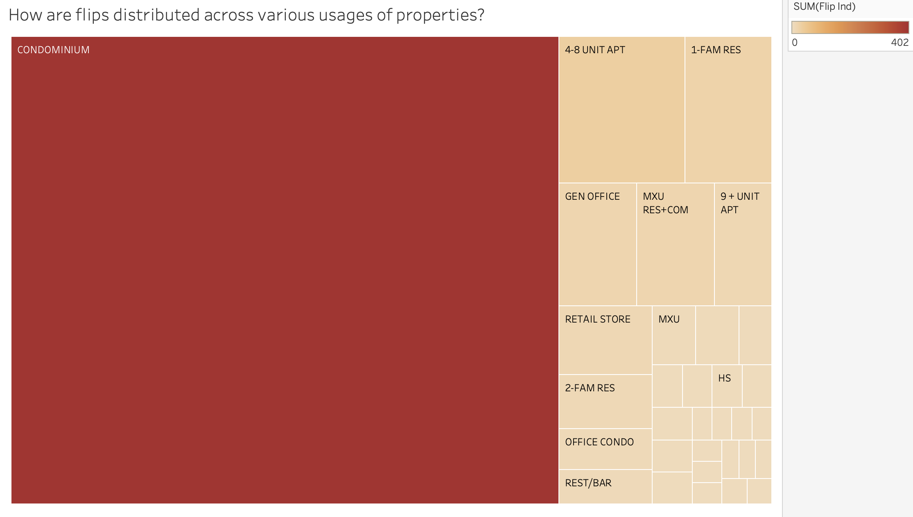
Flip index across different usage within investor purchases
Among the investor purchases, housing used as Condominiums are disproportionately the highest flipped housings. This could indicate that
condominiums are largely used by investors for flipping purposes.
Summary
The recurring and prominent findings of the data analysis about Boston housing market were:
Most of the expensive high-end properties are being used for condominiums.
High-rise style properties are mostly condominiums.
Among all the other housings, most of the cash-sales happen in high-rises.
Purchase and sale by LLC investors is increasing and the small LLC investors are the key players in the housing market.
Short-term flip periods are more prominent in condominiums and lead to sharp price changes.
Since the dataset was until 2022, it would be interesting to see how the trend has changed in the last two years. Also, the main contributor of housing built for the rich affecting the poor is absenteeism. Since the dataset did not contain sufficient information on absenteeism, with more data and time, it would have been interesting to explore that as well.
Having said that, the exploratory analysis has set the foundation for further analysis on the speculative trends of investment on high price properties.